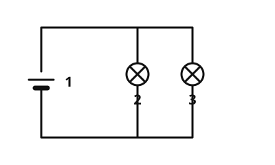

Parallel circuit
Learn with an AI tutor
An AI tutor explains this page to you and helps you with the exercises. Choose your assistant:
Open with Claude Open with ChatGPT Open with Mistral Vibe
You use your own account with the provider. The assistant is not offered by lernapps.net: lernapps only provides the content and the exercises. The choice holds for all pages, on this device only.
The idea
In your room you can switch off the light without the fridge in the kitchen going off. That works because the devices in a house are connected in parallel: each has its own path to the power source.
What to remember
- Parallel circuit
In a parallel circuit the parts are connected next to each other. The current has several paths, one for each part.

© CC0-1.0The current splits up. Each lamp is on its own path. Labels: 1 battery, 2 lamp 1, 3 lamp 2.
It follows that:
- If one lamp is unscrewed, the others keep shining.
- With a switch in each branch you switch each lamp on its own.
- A switch in the shared wire switches all of them together.
- Every lamp shines equally brightly, even if you add another.
Careful, short circuit
- Short circuit
In a short circuit the current flows along a path with no load at all. The cable can get very hot, so a short circuit is dangerous.
If you connect the two poles of the battery directly with a wire, you get a short circuit.
Example
The lights in a house
All the lamps and sockets in a house are connected in parallel. If one lamp fails, the others keep shining, and every lamp has its own switch.
Practice
Exercise
Solution
It keeps shining. right answer
Each lamp has its own path, and the circuit of the other lamp stays closed.
It goes out too.
That happens in a series circuit, where there is only one path.
It shines twice as brightly.
The brightness stays the same. Each lamp still gets the same current.
In a parallel circuit each lamp has its own path. If one fails, the path of the other stays closed.
Exercise
Solution
Right answer: One lamp is unscrewed, all go out – Series circuit; One lamp is unscrewed, the others keep shining – Parallel circuit
If all lamps go out, there is only one path, so it is a series circuit. If the others keep shining, each lamp has its own path, so it is a parallel circuit.
Exercise
Solution
Right answer: The statement is true.
Because the lamps and devices are in parallel, they work independently of each other. You can switch each one off on its own.
Task no. 1
Task no. 1
Build a circuit with two lamps in the two branches. Each lamp should have its own switch, with which you switch only that lamp on and off.
The circuit board has six places: 1 and 6 in the main wire, 2 and 3 in the first branch, 4 and 5 in the second. You choose lamp, switch or wire, tap a place and then switch the power on.
Solution
A switch and a lamp in each branch, for example switches on places 2 and 4, lamps on places 3 and 5.
Exercise
Solution
There is a short circuit, and the lamp does not shine. right answer
The empty branch is a path for the current with no lamp at all. The current takes this path and leaves the lamp off.
The lamp shines more brightly.
The lamp then gets no current at all, because the current takes the empty branch.
Nothing happens.
An empty branch changes the circuit a lot. It is a short circuit.
A branch without a load is a short circuit. The current flows past every load, and that can make cables dangerously hot.
Found a mistake or have an idea for this app?